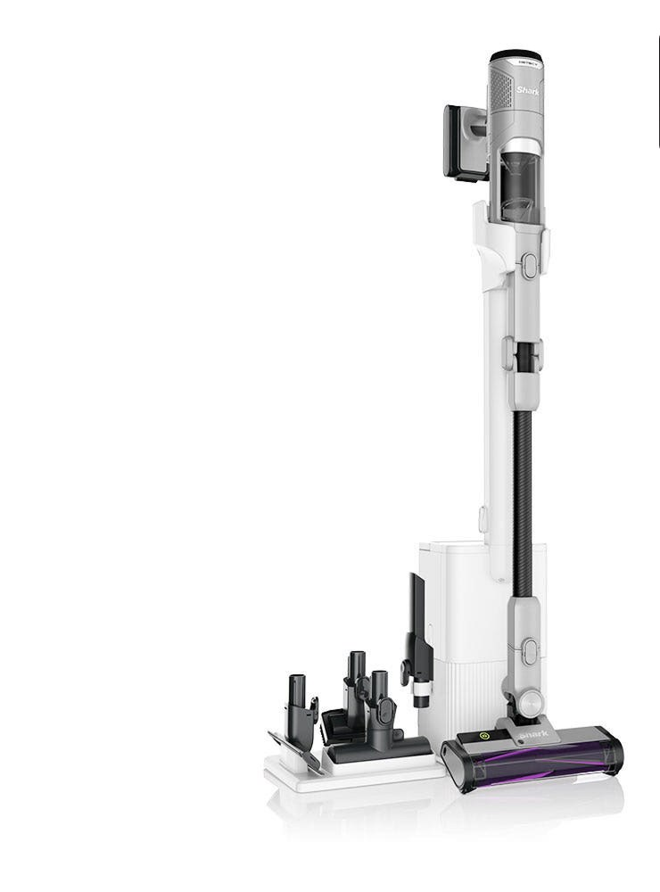
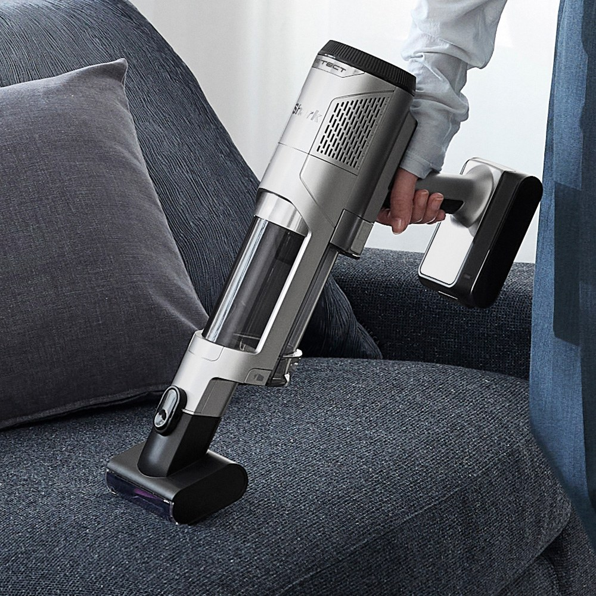
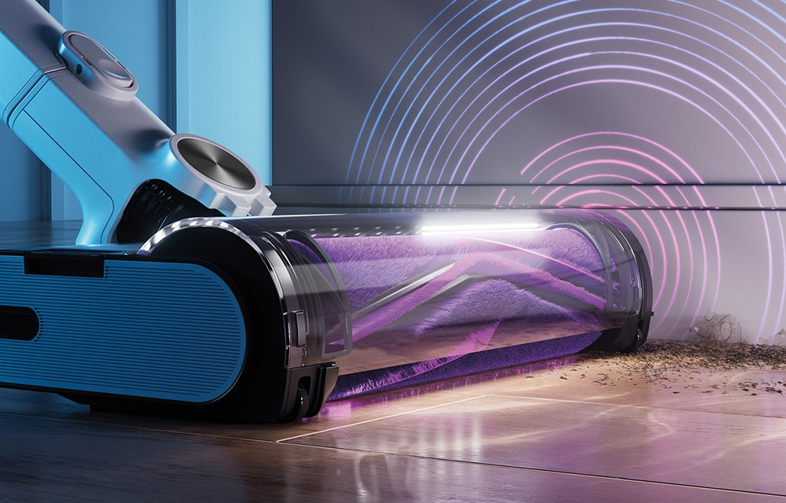
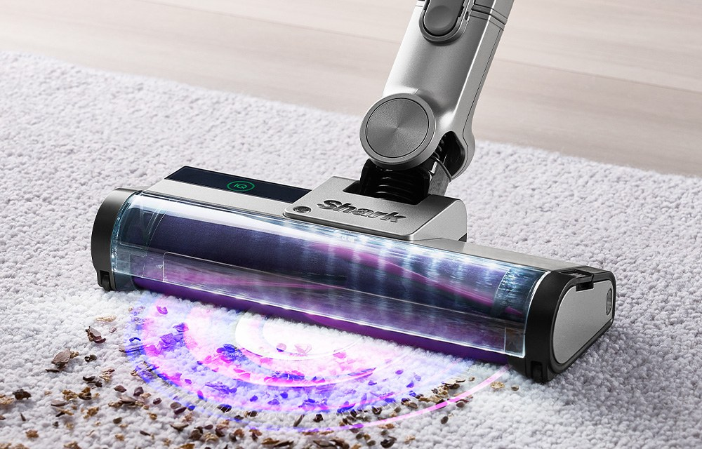
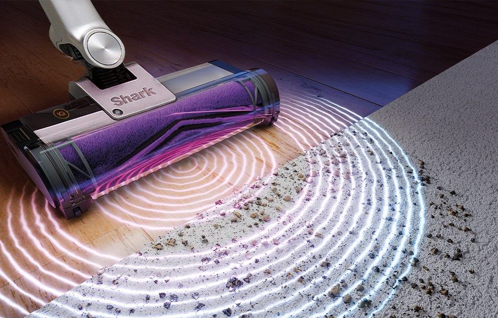

Shark Detect Clean & Empty Cordless Vacuum Review at a Glance
This Shark Detect Clean & Empty cordless vacuum review looks at a stick vacuum that tries to remove two of the most annoying parts of cleaning: not knowing how hard to suck, and emptying the dust bin. Shark (Shark Ninja) sells it in Korea as the 디텍트 Clean&Empty model with a white charging-and-emptying base and a set of sensors.
It is a good reference point if you are comparing cordless stick vacuums that also come with a self-emptying dock, and it is one of the few that shows its sensors on the product page instead of just claiming "smart" cleaning.

What the Three Sensors Do
The Korean product imagery highlights three sensors. They are the point of the vacuum, so it is worth separating them:
- Edge sensor: recognises corners and wall edges and boosts suction there, pitched in the Korean image at a 2.5× stronger pull at the edges.
- Dust sensor: detects how much dirt is under the head and changes mode automatically.
- Floor sensor: detects the floor type and changes mode by itself, for example tile versus carpet.
The practical result is less thinking: you push, and the vacuum changes how it cleans. The listing materials show a purple light on the brush head too, which helps you see debris along the floor line.

Auto-Empty Dock and Daily Use
After cleaning, the base removes the dust from the bin for you. Our Korean write-up emphasises that you do not need to open and shake out the bin, which is the biggest daily annoyance with ordinary stick vacuums, and it matters even more if anyone in the house is dust-sensitive.
The set also includes a small tray of tools beside the stick: crevice and upholstery-style attachments, which the product photography shows alongside the machine. The handheld mode is what makes it useful on sofas, stairs and even in a car.



Key Details
| Detail | What we know |
|---|---|
| Brand | Shark (Shark Ninja) |
| Model name in Korea | Detect Clean & Empty cordless vacuum (디텍트 무선청소기) |
| Sensors | Edge, dust and floor sensors (per the Korean product images) |
| Dock | White charging base with automatic dust emptying |
| Handheld mode | Yes — shown on a sofa in the product photography |
| U.S. Amazon | Identical Korean model not confirmed — we link a similar-vacuum search |
How It Compares
| Shark Detect Clean & Empty | Typical cordless stick vacuum | Robot vacuum | |
|---|---|---|---|
| Hands-on effort | You push it, bin empties itself | You push it and empty the bin by hand | Almost none |
| Floor intelligence | Edge, dust and floor sensors | Usually manual power modes | Mapping and obstacle sensing |
| Best if you want | Strong manual cleaning with less bin hassle | Lowest price | Daily hands-off floors |
Pros & Cons
| Pros | Cons |
|---|---|
| Auto-empty base saves the messiest step | You need space for the dock |
| Sensors adjust suction automatically | Sensor claims come from Shark’s own materials — we did not lab-test them |
| Handheld mode doubles for sofa, stairs and car | Identical U.S. Amazon listing not confirmed |
| Tool tray included in the set | A stick vacuum is still manual cleaning, not a robot |
Who It Suits (and Who Should Skip It)
- Yes: Households that want strong manual cleaning but hate emptying the dust bin.
- Yes: Homes with mixed floors (tile, hard floor, rugs) that benefit from automatic modes.
- Yes: People who also want to clean the car or the sofa with the same tool.
- No: Anyone who wants hands-off daily cleaning — look at a robot vacuum instead.
- No: Small flats with no spot for a dock.
Shark Detect Clean & Empty FAQ
What does the Detect Clean & Empty do automatically?
Two things. A set of sensors changes suction to suit the floor and the amount of dirt, and the charging base empties the dust bin for you after cleaning, so you do not open the bin over a trash can every time.
What are the three sensors?
The Korean product images describe an edge sensor (recognises corners and wall edges for stronger suction), a dust sensor (detects how much dirt is there and changes mode automatically) and a floor sensor (detects the floor type and changes mode).
Can it be used for the car?
The Korean write-up says it can be used in the car as well as in the home. The handheld mode and attachments are what make that practical.
Is it a good choice for allergy sufferers?
Not having to open the dust bin by hand means less dust exposure at emptying time. It is not a medical claim, and you should still empty the base bag or canister as instructed in the manual.
Can I buy this exact model on Amazon?
We could not confirm an identical U.S. listing for this Korean Clean & Empty model. The shop button opens a search for Shark cordless vacuums with auto-empty bases so you can compare.
Shark Cordless Vacuums with Auto-Empty Base
The exact Korean Clean & Empty model is not always on U.S. Amazon, so here is a search for Shark cordless vacuums with auto-empty bases.